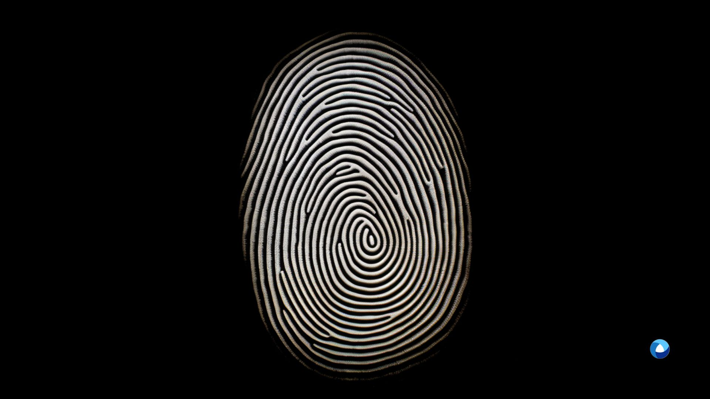

What is Biometric Identity Verification?
Biometric identity verification is a security protocol that uses unique characteristics or biometric identifiers such as facial features, fingerprints, or voice patterns to verify a person's identity. With a biometric identity verification system, you can ensure that the person accessing your services or systems is indeed the individual they claim to be.
The Power of Biometric Verification
In today's digital environment, identity theft, and fraud are growing concerns. Traditional identity verification methods like passwords or PINs are easily susceptible to breaches. In contrast, biometric verification provides a high level of security by using distinctive physical or behavioral characteristics that are difficult to replicate or forge.
Biometric verification can be done through different means, including fingerprint, and facial recognition systems, voice and iris recognition. These biometric features are unique to each individual, making biometric verification one of the most reliable methods of establishing identifying individuals.
Diving Deeper: Biometric Verification System
A biometric verification system is a technology that uses biometrics to verify an individual's identity. This process often involves the automated recognition of an individual's unique biological or morphological identifiers. In this context, biometric systems can be utilized for various applications, from security systems for military operations and police forensics to civil identification and migration control.
Biometric verification systems typically compare the biometrics being presented with the data stored in a database. If the two sets of data match, the system confirms that the person submitting the data is the same person whose data is stored in the identity verification system itself.
Common Types of Biometric Verification
Different biometric verification types offer varying levels of security and convenience. Some of the most common forms of biometric credentials include:
- Fingerprint Recognition: One of the oldest and most widely used biometric technologies, fingerprints are unique patterns found on an individual's fingers to verify their identity. With advanced fingerprint sensors, it has become a quick and reliable method for identification systems.
- Facial Recognition: Using facial recognition technology, these systems analyze facial characteristics to verify an identity. Facial recognition systems use AI algorithms to analyze distinct facial patterns and features, which vary widely among individuals, providing high accuracy.
- Voice Recognition: Voice biometrics is used to identify a person by their unique voice characteristics. This type of biometric verification is gaining popularity due to its non-contact nature and the increasing use of voice-controlled systems.
- Iris Scanning: Iris scans offer one of the highest levels of security among biometric technologies. This is because the iris, the colored part of the eye, has a highly complex pattern that is unique to each individual and extremely difficult to forge or alter.
Multimodal Biometric Systems: Enhancing Security and Accuracy
Multimodal biometric systems combine two or more biometric verification methods. By leveraging multiple biometric sources, these systems increase security and improve the identification process accuracy by mitigating the limitations of single-source biometric solution. In multimodal biometrics, commonly combined methods include fingerprint, facial recognition or voice recognition, and iris scanning.
The Biometric Authentication Process
Authentication is an identity verification process that involves the validation of data. Unlike identification, which seeks to identify an individual, authentication verifies if the person is who they claim to be. The authentication is typically done by comparing biometric features of the captured data with the data stored in the system. If the biometric characteristics match, the system authenticates the person's identity.
Biometrics for Identification
Identification goes a step further than verification. While verification confirms that the person is who they claim to be, identification compares their individual characteristics and their biometrics against a database to determine their identity, even if they don't claim one. This capability is widely used by law enforcement agencies and government bodies such as the Federal Bureau to identify individuals in criminal or defense forensics.
How Can Biometrics Be Used to Verify and Protect Identity?
Biometric verification provides a highly secure and user-friendly solution for identity protection. Here's how biometrics can help in verifying and safeguarding identities:
Combatting Identity Theft and Fraud: Biometric features, being unique for each individual, is almost impossible to forge or steal, making biometric verification a reliable deterrent against identity theft and fraud.
Simplifying the Authentication: Biometrics eliminates the need for remembering passwords or carrying physical identity documents. Instead, a simple scan or image can validate an identity.
Boosting Security in Digital Platforms: In the digital age, where data breaches are rampant, biometric authentication fortifies the security of online platforms. By integrating online biometric verification, businesses can safeguard user data and instill confidence in their customers.
Enhancing Customer Onboarding Process: Companies, especially in the finance sector, can streamline their customer onboarding process by implementing biometric security. By simply capturing a customer's biometrics, businesses can verify the customer's identity quickly and accurately, making the onboarding process faster and more efficient.
Verifying Your Biometric Data
Biometric verification is typically handled by a specialized biometrics agency or through self-service platforms that offer biometric verification services. Verifying biometrics involves capturing biometric information, such as a fingerprint or facial scan, and comparing it with stored data for a match. If a match is found, the biometric verification is successful, confirming that the person is indeed who they claim to be.

Biometric ID Verification
Biometric ID verification is a process that uses a person's data to verify their identity documents, such as passports, driver's licenses, or ID cards. This is typically used when there is a need to confirm that an identity document belongs to the person presenting it. Biometric ID verification enhances the security of transactions and interactions by making it difficult for individuals to use fake identities.
The 4 Biometrics Authentication Types
Physiological Biometrics: This category includes fingerprints, face recognition, iris scans, and other biological identifiers. These are typically static and do not change over time, making them reliable for long-term verification.
Behavioral Biometrics: This involves measuring uniquely identifying and measurable patterns in human activities. Common examples include voice recognition, keystroke dynamics, and gait analysis.
Morphological Biometrics: This includes the shape and structure of the body. Examples include hand geometry, ear shape, and other physical characteristics that are difficult to alter or disguise.
Biological Biometrics: This includes DNA, blood, saliva, or other biological substances. These are unique to an individual, making them highly accurate but more invasive than other methods.
Key Differences Between Biometric Identification and Verification
While both identification and verification are used to authenticate a person's identity, the two processes differ in a few key ways:
Verification: This is a 1:1 process where an individual's data is compared to the specific data stored in a system. It answers, "Are you who you claim you are?"
Identification: This is a 1:N process where an individual's data is compared to all data stored in a system. It answers the question, "Who are you?"
The Future is Biometric
Biometric identity verification systems are a powerful tool in today's world, providing a secure, user-friendly, and effective solution for identity verification. As more sectors adopt this technology, its impact on reducing identity fraud and enhancing security is becoming increasingly apparent. From law enforcement agencies and federal bureaus to businesses conducting customer onboarding, biometrics is becoming an indispensable part of identity verification.
The implementation of biometric verification systems not only enhances security but also streamlines operations and improves customer experience. In addition, with the rise of digital platforms and increasing cyber-attack threats, these systems provide a robust and reliable line of defense, instilling confidence in customers and partners.
So, whether you are a business seeking to safeguard customer data, a financial institution aiming to simplify the customer onboarding process, or a government agency looking to increase security and reduce identity theft, investing in a robust biometric identity verification system is a forward-looking step.
Embrace the future with biometric verification. Enhance your security, increase your efficiency, and give your users the peace of mind they deserve.
Let's work together to shape a safer and more secure future. Contact us today to learn more about how our biometric solutions can benefit you. Our team of experts will gladly guide you through the process and answer any questions.
Key Takeaways
- Biometric identity verification uses unique biological characteristics to verify a person's identity.
- Common types of biometric verification include fingerprint recognition, facial recognition, voice recognition, and iris scanning.
- Biometric verification systems can mitigate identity fraud and theft risks, provide an efficient customer onboarding process, and boost security in digital platforms.
- Biometric authentication validates an individual's biometrics, while identification identifies an individual by comparing their data with a database.
- Investing in a robust biometric identity verification system is a forward-looking step toward a safer and more secure future.

Frequently Asked Questions
1. What is biometric identity verification? Biometric identity verification is a process that uses unique biological characteristics to verify a person's identity.
2. What is biometric identity check examples? Examples of biometric identity checks include fingerprint recognition, facial recognition, voice recognition, and iris scanning.
3. How can biometrics be used to verify and protect identity? Biometrics can be used to verify and protect identity by providing a high level of security, combating identity fraud and theft, simplifying the authentication process, and boosting security in digital platforms.
4. What is a biometric system used for? A biometric system is used to verify an individual's identity using their unique biological or morphological identifiers.
5. What is biometric verification? Biometric verification is a process where an individual's biometrics is compared to specific biometrics stored in a system to confirm their identity.
6. What is an example of a biometric check? An example of a biometric check is a fingerprint scan, where an individual's fingerprint is scanned and compared with the stored fingerprint data to verify their identity.
7. What are the biometric verification types? Types of biometric verification include fingerprint recognition, facial recognition, voice recognition, and iris scanning.
8. How is biometric authentication done? Biometric authentication is done by capturing the biometric data such as fingerprint or facial scan and comparing it with the stored data for a match.
9. How is biometrics used for identification? Biometrics is used for identification by comparing a person's biometric data against a database to determine their identity, even if they don't claim one.
10. What is a biometric verification system? A biometric verification system is a technology that uses biometric data to verify an individual's identity.
11. What are the four types of biometrics authentication? The four types of authentication are physiological biometrics, behavioral biometrics, morphological biometrics, and physical biometrics.
12. What is an example of a biometric authentication system? An example of a biometric authentication system could be a smartphone's facial recognition system that verifies the user's identity by comparing the live facial data with the stored data.
13. What is the difference between biometric identification and verification system? Biometric identification involves comparing an individual's biometric data with all data stored in a system (1:N matching). Verification, on the other hand, compares the data with a specific set of stored data to confirm a claimed identity (1:1 matching).
14. What is biometric ID verification? Biometric ID verification is a process that uses a person's biometric data to verify their identity documents, such as passports, driver's licenses, or ID cards.
15. What is an example of a biometric ID? Examples of biometric ID include a fingerprint scan, facial scan, or iris scan linked to an individual's identity in a secure system.
16. What is the difference between identification and verification? The difference lies in the process: verification compares a person's biometric data with a specific set of stored data (1:1 matching) to confirm a claimed identity, while identification compares the data with all data in the system (1:N matching) to determine their identity, even if they don't claim one.
17. How is biometric identification done? Biometric identification is made by capturing a person's biometric data, such as a fingerprint or facial scan, and comparing it with all stored data in a system to determine their identity.
Get in Touch
Discover the power of biometric identity verification system for your business. Contact our team of experts today for more information, and let's shape a more secure future together.